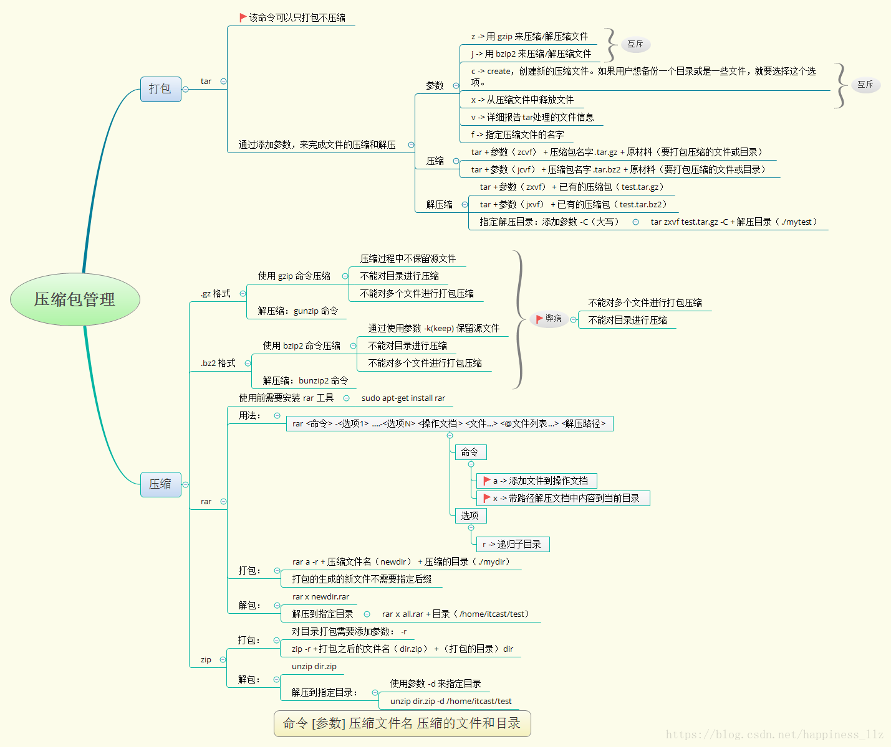

介绍Linux常用命令工具。
文档帮助
查看命令简要说明：whatis
- 参数-w开启正则匹配
查看命令详细说明：info
查看命令说明文档：man
文件及目录管理
创建文件：touch
创建目录：mkdir
删除：rm
- 参数-r表递归子目录
- 参数-f表示不询问
移动：mv
复制：cp
- 参数-a表示保留链接和文件属性，并递归子目录
- 参数-i表示覆盖之前询问
- 参数-p表示复制修改时间和访问权限
显示当前目录：pwd
切换目录：cd
列出目录项：ls
- 参数-l表示显示详细信息
- 参数-a表示显示隐藏文件
查找：
按环境变量PATH路径查找：
- 查看程序所在路径：
which - 查看程序搜索路径：
whereis，常用于安装了程序有多个版本时
- 查看程序所在路径：
find：从磁盘遍历查找文件或目录，实时查找，速度较慢，find . -name modao：查找当前目录的modao文件locate：从数据库(/var/lib/mlocate/mlocate.db)查找命令，使用updatedb更新库。索引查找速度快，需要更新，查找结果是整个路径locate modao：查找路径，路径内容包含modaolocate -b modao：查找路径，路径基名内容包含modaolocate modao modao_test：查找路径，路径内容包含modao或modao_testlocate -A modao modao_test：查找路径，路径内容包含modao和modao_testlocate - c modao：查找路径，路径内容包含modao，显示匹配的条目数
查看文件内容：
cat：显示全部文件参数-n表示显示行号
head：默认显示文件前10行- 参数-n 4表示显示前4行的内容
- 参数-n -4表示显示除文件最后4行外的内容
- 参数-c 2表示显示前2个字节的内容
- 参数-c -2表示显示除文件最后2个字节外的内容
tail：默认显示文件后10行- 参数-n 4表示显示后4行的内容
- 参数-n -4表示显示除文件前面4行外的内容
- 参数-c 2表示显示后2个字节的内容
- 参数-c +2表示显示除文件前2个字节外的内容
more&less的区别：- less可以按键盘上下方向键显示上下内容,more不能通过上下方向键控制显示
- less不必读整个文件，加载速度会比more更快
- less退出后shell不会留下刚显示的内容,而more退出后会在shell上留下刚显示的内容
查找文件内容：grep
修改所有者：chown
- 参数-R表示递归处理
- 使用示例：
chown -R modao:modaogroup *，将当前目录下的所有文件及子目录的拥有者改modao，用户组为modaogroup
修改所属组：chgrp
- 参数-R表示递归处理
- 使用示例：
chgrp -R modao /usr/modao_test，将/usr/modao_test及其子目录下所有文件的用户组改为modao
修改权限：chmod
- r ：读，权限值4
- w：写，权限值2
- x ：执行，权限值1
创建链接：
ln：硬链接，相对独立ln -s：软连接（符号链接），相当于快捷方式
管道：|、;、&&、||
重定向：
>：重定向输出，覆盖文件内容>>：重定向输出，追加文件内容
Bash快捷操作:
C-u：删除光标到行首的所有字符，在某些设置下，删除全行C-w：删除当前光标到前边的最近一个空格之间的字符（保留空格后面的字符）C-H：删除光标前边的字符，相当于退格键
文本处理
【留空】
sed和echo已经另外记录
磁盘管理
查看磁盘空间：df，默认以B为单位且不显示单位
- 参数-h，易读方式显示，显示单位（M/G）
查看当前目录所占空间：du
参数-h，易读方式显示
参数-s，递归整个目录的大小
查看当前目录下所有子文件夹排序后的大小：
1
2
3for i in `ls`; do du -sh $i; done | sort
## 或者：
du -sh `ls` | sort
在linux中打包和压缩和分两步来实现的
打包文件：tar
- 参数-c：打包选项
- 参数-v：显示进度
- 参数-z：调用gzip程序进行压缩，生成tar.gz
- 参数-j：调用bzip2程序进行压缩，生成tar.bz2
- 参数-f：使用档案文件，后跟文件名
解包文件：tar
- 参数-x：解包选项
- 参数-v：显示进度
- 参数-z：调用gzip程序进行解压
- 参数-j：调用bzip2程序进行解压
- 参数-f：使用档案文件，后跟文件名
压缩文件 & 解压文件：
gzip，压缩文件后缀为gz结尾- 压缩后删除原文件，解压完后删除压缩文件
zcat：不解压查看gz压缩文件gunzip：解压gz压缩文件- 参数-d：解压文件
- 参数-#：压缩比，可选1-9，默认为6（压缩比越大，压缩越慢，压缩文件越小）
bzip2：压缩文件后缀为bz2结尾（比gzip有着更大压缩比）- 参数-k，压缩或解压后保留原文件
- 参数-d，解压bz2压缩文件
- 参数-#：压缩比
bzcat：不解压查看bz2压缩文件bgunzip2：解压bz2压缩文件
xz：压缩文件后缀为xz结尾- 参数-d：解压
- 参数-k：压缩或解压后保留原文件
- 参数-#：压缩比
unxz：解压xzcat：不解压查看
zip：打包压缩工具，可以压缩目录，默认不删除原文件- 参数-r：递归目录
- 参数-d：删除压缩文件中的某个文件
- 参数-m：添加某个文件到压缩文件中
unzip：解压工具- 参数-d：指定解压目录
- 参数-o：不提示，直接覆盖

进程管理工具
查询所有进程信息：ps -ef
完整格式显示所有的进程信息：ps -ajx
发送指定信号到相应进程：kill，默认信息是15，指正常停止，一般操作对象是PID，也可使用%jobs指定作业号
参数-l，列出全部信号名称
参数-u，为指定用户的所有进程发送信号
参数-s #，指定信号，常缩写为**
-#**常用信号：
- HUP，1，终端短线
- INT，2，中断（同C-c）
- QUIT，3，退出（同C-\）
- TERM，15，默认信号
- KILL，9，强制终止
- CONT，18，继续（与STOP相反，
fg/bg命令） - STOP，19，暂停（同C-z）
当kill成功地发送了信号后，shell会在屏幕上显示出进程的终止信息。有时这个信息不会马上显示，只有当按下Enter键使shell的命令提示符再次出现时，才会显示出来。
应注意，信号使进程强行终止，这常会带来一些副作用，如数据丢失或者终端无法恢复到正常状态。发送信号时必须小心，只有在万不得已时，才用kill信号(9)，因为进程不能首先捕获它。
要撤销所有的后台作业，可以输入kill 0。因为有些在后台运行的命令会启动多个进程，跟踪并找到所有要杀掉的进程的PID是件很麻烦的事。这时，使用kill 0来终止所有由当前shell启动的进程，是个有效的方法。
实时进程监控：
top：查看系统中使用CPU、使用内存最多的进程，交互界面- P：根据CPU使用百分比大小进行排序
- M：根据驻留内存大小进行排序
- i：使top不显示任何闲置或者僵死进程
htop：- 上左区：显示了CPU、物理内存和交换分区的信息；
- 上右区：显示了任务数量、平均负载和连接运行时间等信息
- 进程区域：显示出当前系统中的所有进程
- 操作提示区：显示了当前界面中F1-F10功能键中定义的快捷功能
分析线程堆栈：pmap，输出内存的状况
列出当前系统打开文件的工具：lsof（Linux一切皆文件）
1 | |
性能监控
CPU监控：top
内存监控：free
- 参数-m，以MB为单位
- 参数-k，以KB为单位
- 参数-g，以GB为单位
综合监控工具：vmstat
- 参数
- 参数1：刷新时间
- 参数2：采集次数
- 字段
- procs
- r：等待执行的任务数
- B：等待IO的进程数量
- memory
- swpd：正在使用虚拟的内存大小，单位k
- free：空闲内存大小
- buff：已用的buff大小，对块设备的读写进行缓冲
- cache：已用的cache大小，文件系统的cache
- swap
- si：每秒从交换区写入内存的大小（单位：kb/s）
- so：每秒从内存写到交换区的大小
- IO
- bi：每秒读取的块数（读磁盘）
- bo：每秒写入的块数（写磁盘）
- system
- in：每秒中断数，包括时钟中断
- cs：每秒上下文切换数
- CPU
- us：用户进程执行消耗cpu时间(user time)
- sy：系统进程消耗cpu时间(system time)
- id：空闲时间(包括IO等待时间)
- wa：等待IO时间
- st：Time stolen from a virtual machine. Prior to Linux 2.6.11, unknown
- procs
超级监控工具：dstat
- 常用：
dstat -clmnsygdr
网络工具
ss是Socket Statistics的缩写。顾名思义，ss命令可以用来获取socket统计信息，它可以显示和netstat类似的内容。ss的优势在于它能够显示更多更详细的有关TCP和连接状态的信息，而且比netstat更快速更高效。
当服务器的socket连接数量变得非常大时，无论是使用netstat命令还是直接cat /proc/net/tcp，执行速度都会很慢。
ss快的秘诀在于，它利用到了TCP协议栈中tcp_diag。tcp_diag是一个用于分析统计的模块，可以获得Linux 内核中第一手的信息，这就确保了ss的快捷高效。
使用方式：
ss [选项]ss [选项] [过滤条件]
1 | |
常用命令：
1 | |
ss常用的state状态：
1 | |
ss使用IP地址筛选：ss src ADDRESS_PATTERN
src：表示来源
ADDRESS_PATTERN：表示地址规则
示例：
1
2
3
4
5# 列出来之20.33.31.1的连接
ss src 120.33.31.1
# 列出来至120.33.31.1,80端口的连接
ss src 120.33.31.1:http
ss src 120.33.31.1:80
ss使用端口筛选：ss (dport | sport) OP PORT
OP：运算符
<=orle：小于等于>=orge：大于等于==oreq：等于!=orne：不等于<orlt：小于>orgt：大于
PORT：端口
过滤端口
dport：过滤目标端口sport：过滤源端口
示例：
1
2
3
4
5
6
7
8
9
10ss sport = :http 也可以是 ss sport = :80
ss dport = :http
ss dport \> :1024
ss sport \> :1024
ss sport \< :32000
ss sport eq :22
ss dport != :22
ss state connected sport = :http
ss \( sport = :http or sport = :https \)
ss -o state fin-wait-1 \( sport = :http or sport = :https \) dst 192.168.1/24
为什么ss比netstat快?
netstat是遍历/proc下面每个PID目录，ss直接读/proc/net下面的统计信息。所以ss执行的时候消耗资源以及消耗的时间都比netstat少很多
用户管理工具
添加用户：useradd -m [username] -s [/bin/bash]
设置密码：passwd [username]
删除用户：userdel [username]
- 参数-r，删除用户并删除用户信息
切换用户：su [username]
查看当前用户所属组：groups
将用户添加到组：usermod -G [groupname] [username]
变更用户所在组：usermod -g [groupname] [username]，添加到新组，从旧组中删除
查看所有用户及权限：more /etc/passwd
查看所有用户组及权限：more /etc/group
更改读写权限：chmod [userMark](+|-)[PermissionsMark]
userMark取值：- u：拥有者
- g：拥有者所在组之内的其它用户
- o：拥有者所在组之外的其它用户
- a：所有用户
PermissionsMark取值：- r： 读，4
- w：写，2
- x： 执行，1
1 | |
环境变量
用户环境信息配置文件，保存于用户主目录：
.bashrc：用于交互式non-loginshell.profile：用于交互式login shell
~/.profile与~/.bashrc的区别:
- 这两者都具有个性化定制功能
~/.profile可以设定本用户专有的路径，环境变量，等，它只能登入的时候执行一次~/.bashrc也是某用户专有设定文档，可以设定路径，命令别名，每次shell script的执行都会使用它一次
系统全局环境信息配置文件，保存于/etc目录：
/etc/profile/etc/bashrc
当登入系统获得一个shell进程时，其读取环境设置脚本分为三步:
- 首先读入的是全局环境变量设置文件
/etc/profile，然后根据其内容读取额外的文档，如/etc/profile.d和/etc/inputrc- 读取当前登录用户Home目录下的文件
~/.bash_profile，其次读取~/.bash_login，最后读取~/.profile，这三个文档设定基本上是一样的，读取有优先关系- 读取
~/.bashrc
系统管理
查看Linux系统版本：
uname -alsb_release -a，等价于more /etc/lsb-releasemore /etc/os-release
查看CPU信息：cat /proc/cpuinfo
查看CPU核心：cat /proc/cpuinfo | grep processor | wc -l
查看内存信息：cat /proc/meminfo
查看架构：arch
系统时间：date
- 参数-s，设置系统日期和时间（格式如：2000-12-30 13:02:00）
- 格式化输出：
date +%Y%m%d.%H%M%S
设置时区：tzselect
将系统时间写入CMOS：clock -w
主要参考
本文命令测试环境：Ubuntu 18.04 x86_64